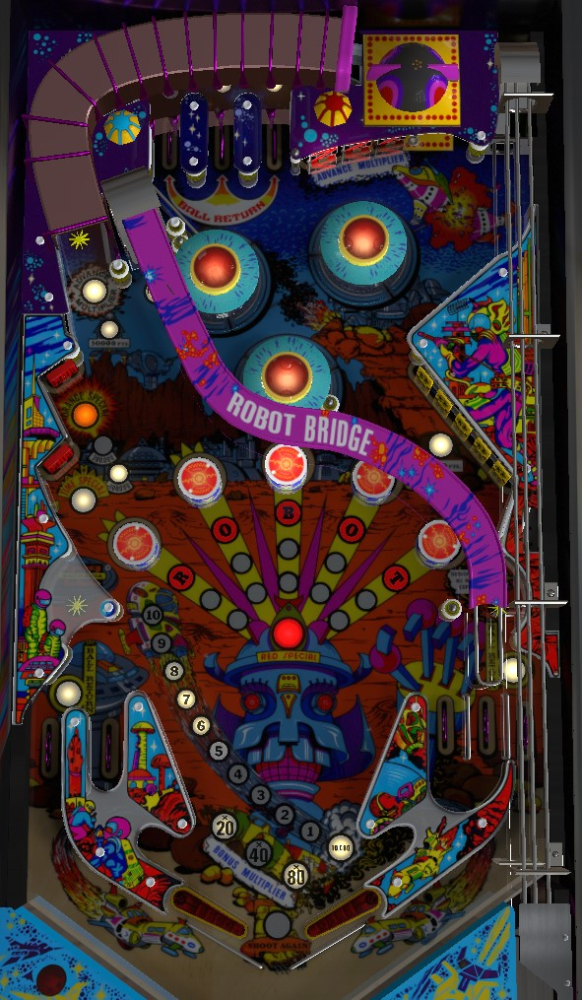

Not to be confused with Robocop (Data East, 1989) or Robo-War (Premier Gottlieb, 1988).
Shoot the flip ramp in the upper left to raise the Robot round drop targets; drop them all 2, 3, or 4 times to score Red Special, which is worth a free game, extra ball, or 4,500,000 points. Complete the right drop targets to light the Time Special on the left for 300,000 and progress toward lighting the Orange Special on the left for an extra ball or 1,000,000. Complete the Z targets in the upper right or make 3 left orbit shots to advance bonus multiplier. Complete the top lanes to light an out lane for Ball Return drain saver.
To raise the round Robot drop targets in the center of the table, make an extremely precise and difficult shot to the flip ramp in the upper left that follows the Robot Bridge. The Robot Bridge scores 30,000 points the first time it is shot on a ball, then 100,000 points for the rest of that ball. Knocking down a Robot round target scores 50,000 points and lights one or more of the inserts correpsonding to that target. Hitting all of the Robot targets 2, 3, or 4 times (depending on game settings) scores a Red Special, which can be worth a free game, an extra ball, 4,500,000 points, or a "superbonus", which lights the word Superbonus on the backglass and does nothing else (used in some places to signify an earned free drink, or similar).
Each target down in the 5-bank on the right scores 10,000 points and a bonus advance; after the bank has been completed once, this value increases to 30,000 and a bonus advance for the rest of the ball. Each completion of the drop target banks lights the Time Special target in the middle-left for 20 seconds; this target scores 300,000 points when lit, and just 5,000 when not lit. Each completion of the drop targets also advances the Orange Special target, which scores 5,000 points when unlit, 100,000 when advanced once, 300,000 when advanced twice, and Orange Special when advanced 3 times. The Orange Special award can be a free game, an extra ball, 1,000,000 points, or a superbonus; collecting the Orange Special award completely unlights the Orange Special target, but collecting a point value from the target does not reset it.
The left orbit feeds the top lanes. Left orbit shots rotate between scoring 10,000 points -> 30,000 points -> 30,000 points plus advance bonus multiplier -> back to 10,000, then repeat. Any left orbit shot also starts the bumpers flashing for 1,000 points instead of 100.
Roll through a lit top lane to unlight it. All top lanes score 10,000 points. Unlighting all 3 top lanes lights one of the out lanes for Ball Return, which is a one-time drain shield. One top lanes completion only lights one Ball Return; if neither out lane is lit, the game prioritizes lighting the right out lane. There is no lane change available at the top lanes.
Hit a lit Z target in the upper right to unlight it. Z targets always score 5,000 points and a bonus advance. Unlight all 3 targets to advance the bonus multiplier in the sequence 20x-40x-80x. The Z targets cannot be shot directly, and need to be completed via pop bumper luck or with the aid of the hidden slingshot in the wall above the drop targets that faces the Z targets.
A precise left flipper shot that threads the needle between the rightmost pop bumper and the drop targets can access the top lanes via a semi-obscured right orbit shot, but this shot does not award the same values as the left orbit.
Robot has a conventional in/out lane setup, but with two in lanes on the right instead of one. In lanes score 30,000 points and a bonus advance. Out lanes score 50,000 points. Slingshots score 30 points. The mini-loops with rollover buttons just above the in lane entrances score 10,000 points and a bonus advance. Out lanes can be lit for Ball Return by completing the top lanes; draining down an out lane lit for Ball Return will cause the ball to be returned to you at no penalty (other than unlighting the out lane).
Bonus is advanced by drop targets, standup targets, top lanes, and in lanes. Bonus multiplier is advanced in the sequence 20x-40x-80x by completing the Z targets in the upper right or by making 3 shots to the left orbit. Max bonus is 80x 20,000 = 1,600,000 points. There is no mid-ball bonus collect and no part of the bonus can be carried from ball to ball.
On the final ball of the game (e.g. ball 3 of a 3-ball game), the ball in play display will read "Game Time Bonus Up: 10" as soon as the ball enters the playfield. During this final ball, every 3rd switch hit anywhere on the playfield adds 1 to the Game Time Bonus. Immediately after this final normal ball drains, the Game Time Bonus begins. Game Time Bonus is a timed bonus ball with unlimited ball save for as long as there is time on the clock.
If you drain during Game Time Bonus: a new ball will be fed to the shooter lane and play continues with no penalty other than the clock continuing to run.
If you tilt during Game Time Bonus: the entire playfield will go dark and the ball will be allowed to drain, with no further points being scored. The entire end of ball bonus including multiplier will be reset without being scored. If there is still time on the clock when the ball reaches the out hole, play will continue.
When Game Time Bonus ends: the announcer will count down your final 10 seconds on the clock. When the clock hits 0, all playfield lights go dark and the ball is allowed to drain, with no further points being scored. After the ball reaches the out hole, your end of ball bonus is scored, and the game either enters Game Over mode or transitions to the next player, who will play their final normal ball immediately followed by their Game Time Bonus ball.
If you collect an extra ball during Game Time Bonus: the clock immediately stops, and the previous rule of "every 3rd switch adds 1 to the clock" applies. When the ball drains and the extra ball is used, the Game Time Bonus ball will continue.
Remember that all players play their Game Time Bonus ball immediately after their final standard turn, and that the Game Time Bonus clock continues to run while the ball is in the shooter lane waiting to be plunged. Note as well that "seconds" of Game Time Bonus may not be equivalent to real-life seconds.
The Red Special can require 2, 3, or 4 completions of the Robot popup targets.
The Orange Special can require 2, 3, or 4 completions of the right drop targets.
The maximum number of extra balls a player can hold at once can be set to 1 or 3.